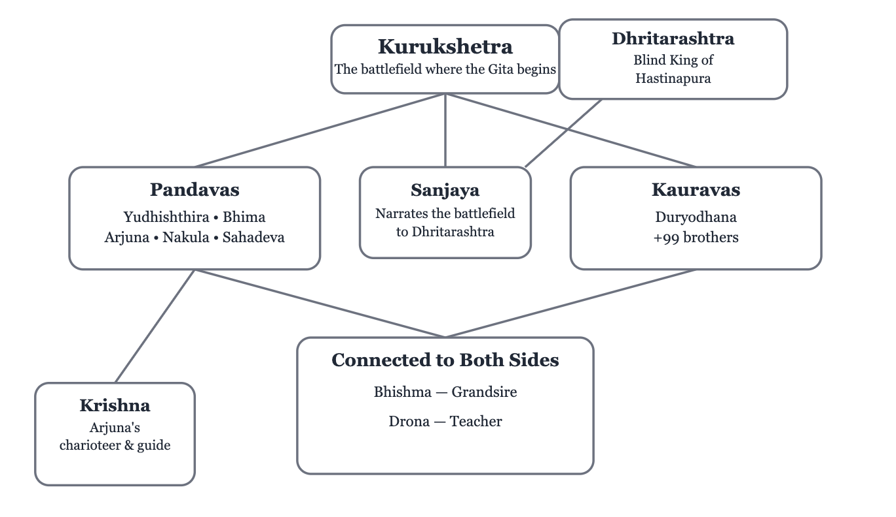

Ongoing
Bhagavad Gita: A Journey from Confusion to Clarity
Exploring the Inner Battlefield and the Path of Wisdom: Self, Duty, and Conscious Action
The Bhagavad Gita is a conversation between Arjuna and Krishna, unfolding on the battlefield of Kurukshetra just before a war begins. Arjuna is caught between his duty and his love for the people standing on the other side. His confusion becomes the doorway to a much deeper conversation about who we are, how we act, what we are attached to, and what it means to live with clarity.
But the Bhagavad Gita does not begin with this conversation.
How did Arjuna arrive here in the first place?
The Bhagavad Gita is part of the sixth of the eighteen books of the Mahabharata, known as the Bhishma Parva. The Gita itself takes place across Chapters 23–40, just before the battle of Kurukshetra begins. By the time we reach the battlefield, the story has already unfolded across the five books before the Bhishma Parva—through generations of family relationships, rivalries, choices, and conflicts that have led everyone to this moment.
Before the Gita
A small note before we begin: There will be many names along the way, and it can feel confusing at first. But don't worry about remembering everyone. Just as people become familiar to us through the different relationships they hold in our lives, these characters will gradually become familiar as the story unfolds.
The Bhagavad Gita takes place at a very specific moment in the Mahabharata: just as the armies of the Pandavas and Kauravas are about to enter battle.
But this battlefield did not appear overnight. The five books before it lay the foundation for everything that is about to happen — the family relationships, rivalries, choices, promises, and conflicts that eventually lead to Kurukshetra.
Here is a glimpse of the story that brings us to the battlefield.
1. Adi Parva — The Beginning
The story begins with the Kuru dynasty, introducing the Pandavas, Kauravas, Bhishma, Drona, Krishna, and the relationships that connect them.
2. Sabha Parva — The Dice Game
After the Pandavas establish their kingdom and gain great power, Duryodhana becomes envious of their success. At his urging, and with Shakuni acting as the skilled player of dice, Yudhishthira is invited to a game of dice in the royal court.
Yudhishthira accepts the invitation and gradually loses his kingdom, his wealth, his brothers, himself, and Draupadi. The game leads to Draupadi's humiliation in the court and eventually to the Pandavas' exile.
3. Vana Parva — The Forest
The Pandavas spend twelve years in exile, facing hardship and gathering the strength and wisdom that will shape what comes next.
4. Virata Parva — The Year in Disguise
The Pandavas spend their final year of exile in disguise. After fulfilling the terms they agreed to, they return to claim back their kingdom as promised. But the Kauravas refuse to honour the agreement.
5. Udyoga Parva — The Road to War
Krishna attempts to negotiate peace between the two sides, but the Kauravas refuse to give back what was promised. The effort fails, and war becomes unavoidable.
6. Bhishma Parva — The Battlefield
The armies gather at Kurukshetra. Arjuna asks Krishna to place their chariot between the two armies — and sees the people he loves standing on both sides.
This is where the Bhagavad Gita begins.
Reading the Bhagavad Gita Together
Now that we have a glimpse of the story that brought everyone to Kurukshetra, we can begin reading the Bhagavad Gita itself.
One chapter at a time, read it slowly. I’ll share what catches my attention, what I had to look up, and the questions that arise along the way below.
Read the chapter first, then come back and explore together with me.
Three Things to Carry While Reading
1. What is happening?
The story. What is happening in the scene, and where are we in the story?
2. What is being said?
The literal meaning. What is Krishna, Arjuna, or the other characters actually saying?
3. What might this teach?
The reflection. What questions, ideas, or lessons might we take from what we have read?
Chapter 1 — Arjuna Vishada Yoga
The Yoga of Arjuna's Despair
Who Are All These People?
One of the first things I found myself wondering about in Chapter 1 was not actually about the philosophy—it was about the names.
Even in the very first verse, I was already asking myself: Who is Dhritarashtra? Who is Sanjaya? Why is Sanjaya the one describing the battlefield?
And then more names begin to appear—Duryodhana, Bhishma, Drona, Arjuna, Krishna, and many others.
I quickly realised that understanding the relationships between these characters is important to understanding why Arjuna is so overwhelmed when he looks across the battlefield.
So, before diving deeper into the chapter, I made a little mind map to help understand who everyone is and how they are connected.

Who's Who
Curious about a name? Hover over it.
Pandava Army
Bhima
Bhima
Second of the five Pandava brothers, known for his great strength.
Yuyudhana
Yuyudhana (Satyaki)
A Yadava warrior and ally of the Pandavas.
Virata
Virata
King of Matsya and an ally of the Pandavas.
Drupada
Drupada
King of Panchala and father of Draupadi.
Dhrishtaketu
Dhrishtaketu
King of Chedi and an ally of the Pandavas.
Chekitana
Chekitana
A Yadava warrior fighting alongside the Pandavas.
Purujit
Purujit
A relative and ally of the Pandavas.
Kuntibhoja
Kuntibhoja
King and relative of the Pandavas; foster father of Kunti.
Shaibya
Shaibya
An elder king and ally of the Pandavas.
Yudhamanyu
Yudhamanyu
A warrior fighting for the Pandavas.
Uttamaujas
Uttamaujas
A warrior fighting for the Pandavas.
Abhimanyu
Abhimanyu
Son of Arjuna and Subhadra; a young Pandava warrior.
Sons of Draupadi
Sons of Draupadi
The five sons of Draupadi, one by each of the Pandava brothers.
Kaurava Army
Drona
Drona
Martial teacher of both the Pandavas and Kauravas.
Bhishma
Bhishma
The grandsire of the Kuru family and a great warrior.
Karna
Karna
A great warrior and close ally of Duryodhana.
Kripa
Kripa
Elder warrior and teacher in the Kuru court.
Ashvatthama
Ashvatthama
Son of Drona and a warrior on the Kaurava side.
Vikarna
Vikarna
One of Dhritarashtra's sons and a Kaurava warrior.
Bhurishrava
Bhūrishrava
Son of Somadatta and a warrior fighting for the Kauravas.
Other warriors
Other warriors
Duryodhana mentions that many other warriors are present on his side.
The People on the Other Side
Something that stood out to me is that Arjuna isn't facing strangers on the battlefield. The Pandavas and Kauravas are cousins, both belonging to the larger Kuru family.
He sees
Bhishma
Bhishma
The grandsire of the Kuru family. He took a great vow to give up
his claim to the throne and remain celibate, and later remained
loyal to the throne of Hastinapura.
, the grandsire of the family, and
Drona
Drona
The teacher of both the Pandavas and Kauravas. He trained them
in warfare and was especially known as Arjuna's teacher in archery.
, his teacher.
But Arjuna isn't the only one facing a difficult situation. Bhishma and Drona are also standing on the battlefield, facing people who are their own family and, in Drona's case, even his students. They have chosen to fight on the Kaurava side, yet they must face the very people they have loved, taught, and protected.
Arjuna isn't simply looking at an opposing army. He is looking at his own family — his cousins, his grandfather, his teacher, relatives, friends, and people he knows.
This makes the conflict feel deeper than simply choosing between winning and losing a war. There is a sense that almost everyone on the battlefield is caught in a web of relationships and duties that makes the idea of simply choosing a "side" much more complicated.
It also helps us understand why Arjuna begins to worry about the destruction of family dharma. The consequences of the war are not limited to those who fight; they threaten to disrupt the family and social order that holds their community together.
One Person, Many Identities
One thing I noticed while reading Chapter 1 is that Krishna and Arjuna are not always referred to simply as “Krishna” and “Arjuna”.
Instead, the translation uses descriptions such as son of Pritha, lord of the cows, killer of Madhu, and mover of men.
At first, I was like... wait, who are they talking about? But then I realised that these are different ways of referring to the same person, highlighting their family, qualities, relationships, or stories.
It made me think about how one person can carry many identities. We can be someone's child, someone's friend, someone's teacher, or be known for something we have done.
The person hasn't changed — but the aspect being highlighted has. Maybe we are like that too. We often think of ourselves as one fixed identity, but different parts of us appear depending on the people we are with and the roles we take on.
So one little thing I took away from Chapter 1: one person can carry many identities.
How Did We Get Here?
Chapter 1 may look like the moment when the battle is about to begin, but it also feels like a moment to look back at everything that has brought everyone here. Their duties, relationships, vows, loyalties, and past choices have all shaped the path that led them to this moment.
And perhaps this is where the deeper questions begin: What is our dharma? What is our duty? What makes an action right? And what happens when every choice seems to cause suffering for someone?
Arjuna is standing at the point where all these questions come together. The battle has not yet begun, but the conflict within him already has.
How do I know which path to take when there is no choice that feels completely right?
Chapter 2 — Samkhya Yoga
The Yoga of Knowledge
.
Chapter 3 — Karma Yoga
The Yoga of Action